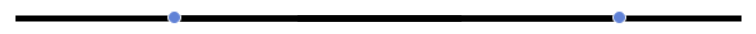
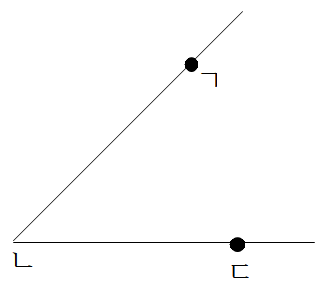
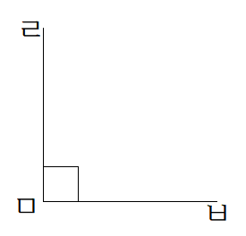
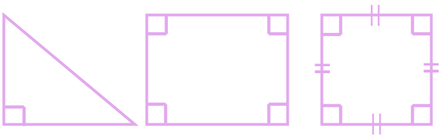

선분, 반직선, 직선 알아보기
- 선분 - 두 점을 곧게 이은 선
- 반직선 - 한 점에서 한쪽 점으로 끝없이 늘인 곧은 선
- 직선 - 양쪽으로 끝없이 늘인 곧은 선
- 점과 점을 이은 선분
- 점한쪽을 ㄱ, 반대쪽을 ㄴ이라고 할때, 선분 ㄱㄴ 또는 선분 ㄴㄱ
-점에서 시작하여 점을 지나는 반직선
- 점 한쪽을 ㄱ, 반대쪽 점을 ㄴ이라고 할때, 반직선 ㄱㄴ

-점과 점을 지나는 직선
- 점 한쪽을 ㄱ, 반대쪽 점을 ㄴ이라고 할때, 직선 ㄱㄴ또는 직선 ㄴㄱ
각, 직각 알아보기
- 각 : 한 점에서 그은 두 반직선으로 이루어진 도형 
- 직각 : 종이를 반듯하게 두 번 접었다 펼쳤을 때 생기는 각 
- 각 ㄱㄴㄷ 또는 각 ㄷㄴㄱ으로 표시함.
- 반직선 ㄴㄱ과 반직선 ㄴㄷ : 변
- 점 ㄴ : 꼭짓점
-직각 ㄷㄹㅁ 또는 직각 ㅁㄹㄷ으로 표시함
직각삼각형, 직사각형, 정사각형 알아보기

직각삼각형 : 한 각이 직각인 삼각형
- 한 각이 직각이 되도록 그리면 나머지 한 변을 그려 직각삼각형을 완성할 수 있음.
직사각형 : 네 각이 모두 직각인 사각형
정사각형 : 네 각이 모두 직각이고, 네 변의 길이가 모두 같은 사각형
도형 밀기, 뒤집기, 돌리기
- 도형 밀기 - 도형을 어느 방향으로 밀어도 도형은 변하지 않음
- 도형 뒤집기 - 도형을 왼쪽이나 오른쪽으로 뒤집으면 왼쪽과 오른쪽의 위치가 바뀜.
- 도형 돌리기 - 한 바퀴 돌린 도형은 처음 도형과 같음.
- 도형을 밀면 위치가 변함
- 도형을 위쪽이나 아래쪽으로 뒤집으면 위쪽과 아래쪽의 위치가 바뀜.